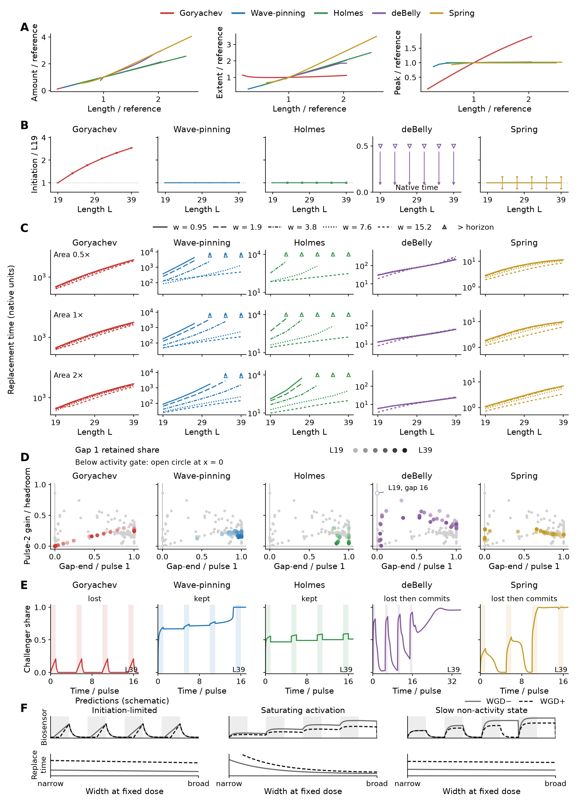

Generated 2026-10-22T18:55:35.118701+00:00. Producer complete.
Main PDF · Complete supplement · Sources and qualifications

Enlarged cells resist replacement through distinct initiation, cue-width and pulse-memory signatures.
A, Incumbent excess amount, extent and peak, normalized to each model’s reference, across 97 retained states.
B, Initiation is the time from cue onset until maximum in-cue activity minus the profile minimum exceeds 10% of the model’s L19 incumbent excess peak. Area 1, width 3.8; times are normalized to L19. All six deBelly upper bounds are 0.5 native units (downward arrows); first-update sampling leaves its size dependence unresolved.
C, Replacement time (first eligible challenger share ≥ 0.75) versus length, with a line per width and rows for areas 0.5, 1 and 2. Upward triangles/arrows are lower bounds: the cue never replaced within the horizon (6,000 Wave-pinning; 10,000 Goryachev/Holmes; 2,000 deBelly; 100 Spring, native units). Broad cues rescue Holmes across all lengths; narrow-cue censoring does not establish a growing penalty. Spring native widths equal the displayed widths divided by 38.
D, Gap-1 activity kept versus pulse-2 gain as a fraction of headroom (Eq. 1). Four equal pulses, total ON 1.5 times the model-length commitment calibration; gaps 0–16 pulse durations. Holmes L31–39 uses the L27 calibration. Other models are grey; lightness indicates L. Open circles at x = 0 code activity below the existing visibility gate. At the left wall, deBelly/Spring gain on pulse 2 despite no visible activity; Goryachev never does. The deBelly L19/gap16 first-gap endpoint was checked against native fields.
E, L39 gap4 challenger-share histories, labelled kept / lost / lost then commits; shading marks cue ON. deBelly includes full recovery; others show one post-train pulse duration. Continuous raw shares include below-gate values. deBelly’s later timing and fields remain numerically sensitive (supplement).
F, Schematic biosensor predictions for the same pulse train and equal-dose width series in WGD− and enlarged WGD+ cells: delayed rises and resets; saturation with gap retention and strong width rescue; or gap collapse followed by commitment, with weaker width rescue. Predictions are prospective. Model kinetics are unchanged.
s₁ and s₂ are pulse-end challenger shares. The first-gap share uses the existing visibility gate in D; raw shares remain in the CSV.